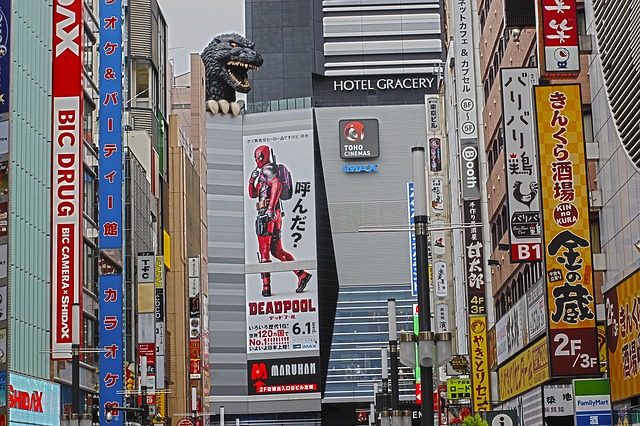
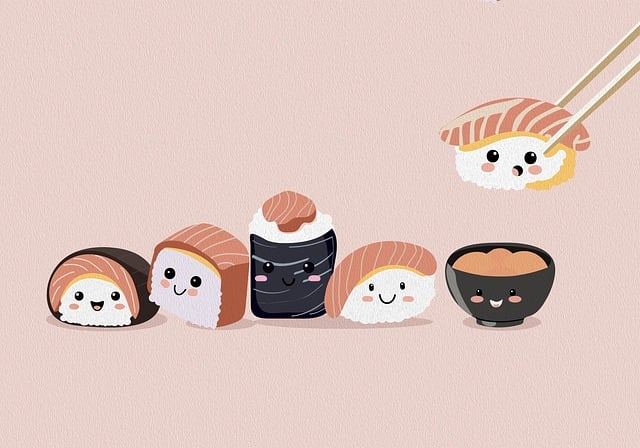
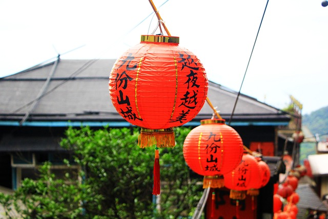

El clima en Japón es muy variable dependiendo de la época del año y de la zona en la que te encuentres. En Japón se distinguen cuatro estaciones, igual que en los países occidentales: invierno (de diciembre a febrero), primavera (de marzo a mayo), verano (de junio a agosto) y otoño (de septiembre a noviembre). La época de lluvias en Japón se concentra especialmente en los meses considerados como verano (de junio a agosto), mientras que la mejor época en cuanto a clima es la primavera (de marzo a mayo).
La gastronomía de Japón como cocina nacional ha evolucionado, a través de los siglos, a causa de muchos cambios políticos, sociales y de recursos, comenzando por la Edad Antigua, en la que la mayoría de la cocina estaba influenciada por la cultura china. Finalmente, la cocina cambió con el advenimiento de la Edad Media que marcó el comienzo de un abandono del elitismo con la normativa del shogunato. Al principio de la Edad Moderna tuvieron lugar grandes cambios que introdujeron en Japón la cultura occidental.
En Japón, hay varias costumbres y tradiciones que debes conocer. Algunas de ellas son: Llamar a las personas por su nombre. Dejar los zapatos en la puerta. Presentarse con un regalo. Dar las gracias antes de comer diciendo "Itadakimasu". Sorber el ramen, soba o udon sin miedo.
| Itinerario de Viaje a Japón | |||
|---|---|---|---|
| Hora | Actividad | Ubicación | Detalles |
| 10:00 | Desayuno | Cafeteria de barrio | Té tipico de japon |
| 11:00 | Visita | BADAT | PROGR |
| 12:00 | Tour en bus | BADAT | vista panoramica |
| 14:00 | Almuerzo | BADAT | cocina japonesa |
| 15:00 | Visita | BADAT | Recorrido de 3 horas |
| 17:00 | Tour | ||
Sitio web conVuelos baratos
Sitio web conHotel baratos